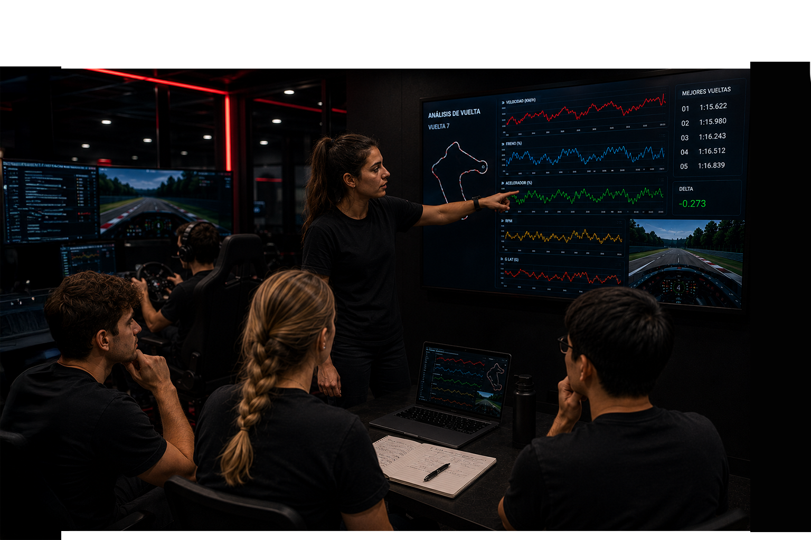
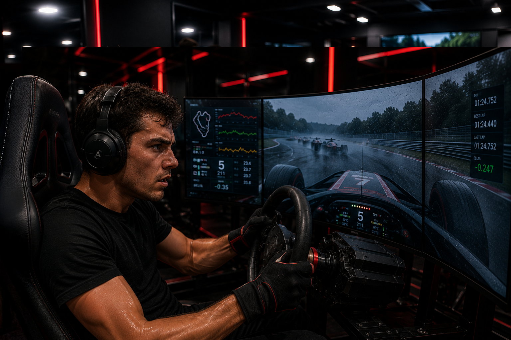
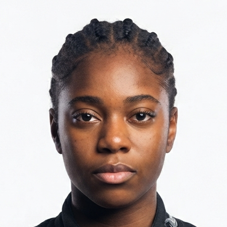

Control
de reflejos
Mejorá tu tiempo de reacción y capacidad de respuesta.

Somos una academia con simuladores profesionales y programas diseñados para hacer crecer tu rendimiento.
Cada sesión trabaja una habilidad concreta. Esto es lo que un simulador profesional entrena en vos, sesión a sesión.
Mejorá tu tiempo de reacción y capacidad de respuesta.
Desarrollá tu capacidad de decidir rápido y bien bajo alta presión.
Mejorá tu capacidad de recordar y ejecutar movimientos complejos bajo estrés.
Manejá el vehículo con precisión y eficiencia en condiciones de alta demanda.
Interpretá y analizá la información de la carrera en tiempo real.
Identificá y gestioná los riesgos asociados a la conducción de alta presión.
Gestioná el cansancio físico y mental durante la conducción.
Mantené el rendimiento óptimo bajo presión y estrés durante la conducción.
No alcanza con girar un volante. Cada entrenamiento se mide, se analiza y se convierte en información precisa para tu evolución como piloto.

Cada vuelta queda registrada con cientos de variables que permiten detectar patrones invisibles durante la conducción.

Analizá cada movimiento del volante para perfeccionar la precisión, la suavidad y el control en cada curva. .

Analizá tu uso de los pedales para optimizar la entrega de potencia y el control del vehículo.

Revisá cada entrenamiento desde múltiples perspectivas: telemetría, cámara onboard e inputs del volante.

Registramostu progreso sesión tras sesión para medir tu evolución y definir objetivos concretos en cada etapa del entrenamiento personal.


Los equipos reales ya buscan talento en los simuladores. La distancia entre ambos mundos cada vez más chica.
El entrenamiento adecuado permite desarrollar habilidades y fortalezas que impactan en cada decisión dentro de la pista.

Perfeccionamiento de trazo dinámico y telemetría avanzada.

Dominio absoluto del vehículo en situaciones de alta presión.

Resistencia mental y gestión de ritmo para carreras largas.
Cada programa incluye 8 sesiones mensuales. Disponible en hasta 3 cuotas sin interés.
Tres pilares que se repiten en cada programa, se mantienen desde el primer día hasta la última vuelta.
Trabajamos el enfoque y la gestión de la presión tanto como el manejo: la cabeza también se entrena.
Cada sesión queda registrada. Comparás tu evolución con datos reales, no con sensaciones.
Bajás tiempos medibles y llegás mejor preparado para competir, dentro o fuera del simulador.
Análisis sector por sector con métricas globales para reducir cada décima y optimizar el rendimiento personal.
Mantené un ritmo constante durante todo el recorrido y reducí las diferencias obtenidas entre vueltas practicadas.
Identificá dónde ganás y perdés tiempo mediante un análisis detallado de cada sector específico del circuito.
Seguimiento de tu progreso para comparar sesiones y medir la evolución de manera objetiva y súper práctica.
Entrenaron acá antes de correr en una pista real. Esto es lo que eligieron algunos de nuestros talentos.
Bajó 1.2s por vuelta en seis semanas y hoy compite en la Liga Menor de Turismo Virtual.

Debutó en su primer campeonato interno con menos de cuatro meses de entrenamiento.
Mejoró un 40% su consistencia entre vueltas analizando telemetría sesión a sesión.
"Empecé sin entender por qué perdía tiempo en la misma curva. Con el análisis de trazada lo vi clarísimo en la primera sesión."